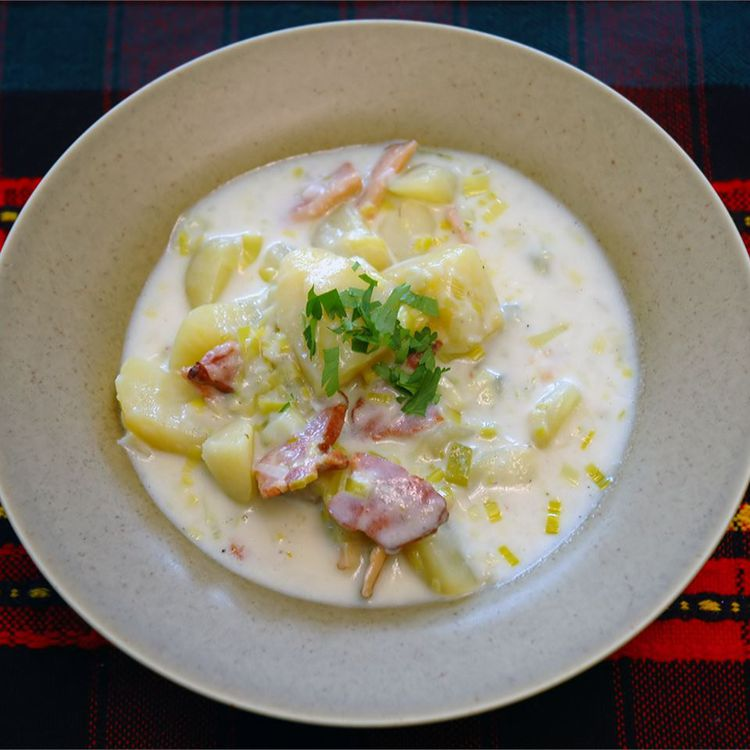

Shepherd Pie

Description
Leek and Potato Soup is a thick and creamy classic French Potato Soup that
starts with garlic butter in which leeks are slowly sautéed to bring out the sweet flavour.
Ingredients
- Leeks
- Potatoes
- Chicken Broth
- Bacon
- Heavy Cream
Steps
- In a large saucepan or stockpot, bring potatoes and chicken broth to a boil.
Cook until potatoes are tender. Meanwhile, place bacon in a large, deep skillet.
Cook over medium high heat until evenly brown. Drain, reserving 3 tablespoons of
grease and set aside. Sautee the leeks in the frying pan with the reserved bacon
grease 8 to 10 minutes.
- When the potatoes are tender, stir in the fried leeks, heavy cream and bacon. Stir to blend and remove from heat. Serve hot.